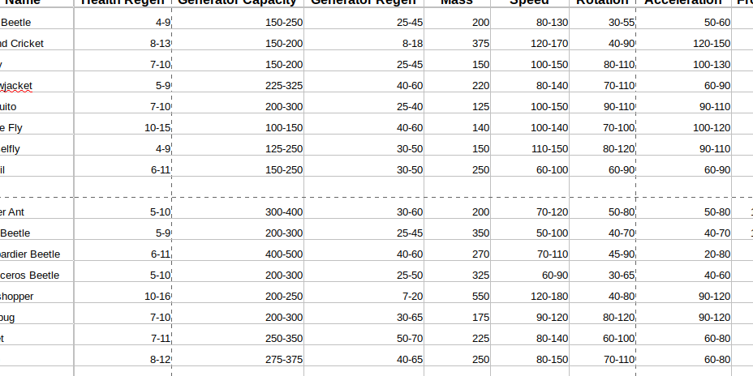

Ship Stat Balancer
Never go through the tedious process of entering your ships' stats into a spreadsheet, balancing them by hand, and translating the data into the ship editor again!
Now with Starblast Utilities: Ship Stat Balancer, you can make it easy and fun to balance ships. With just the click of a button, you can get all the ship stats you need and easily and efficiently transfer them into the ship editor.